Dune Legacy
An open-source remake of Dune II
An open-source remake of Dune II
Arrakis is not just a battlefield. It is a city you have to keep alive.
Dune City is a city-builder fused with Dune II. It keeps the sand, spice, vehicles, houses, and survival pressure of the original, then adds zoning, power grids, roads, budgets, civic services, and colony growth. Less "capture the base", more "make the desert pay rent".
Play campaign co-op with your friends online!
Desktop: 1.0.851 · Android: 0.2.30
DuneCity turns the Dune Legacy engine into a colony simulation. You are still on Arrakis, still under pressure, still living by the spice. But now the fight is bigger than units: it is land use, infrastructure, power, traffic, economy, and whether your settlement can survive long enough to matter.
Build generation and distribution into the city plan. A dead grid means a dead settlement.
Residential, commercial, and industrial districts push the RTS map toward a living civic system.
Roads and traffic matter. The city is only as useful as the routes that keep it moving.
Budgets, services, growth, and spice-backed survival turn every expansion into a tradeoff.
The city still needs defending. Recent releases give you new maps every game and an army that moves the way a modern RTS army should.
Main menu → Random Skirmish. Set the map size, rock (up to 100%) and spice, then pick each side's base, army and city: bases range from an outpost to a fortress with rocket turrets, and cities arrive already zoned and powered.
Choose your start, an AI partner in your house, up to 6 allied and 7 enemy houses, the mod and the game rules. A seed lets you replay a map you liked.
When hosting, press Random map… in the map chooser. Choose 2–8 start positions and what every house starts with; the next screen is the normal lobby, where friends join, AI fills empty starts and you set teams.
Mirrored starts and identical bases, armies and cities keep it fair.
Select two or more ground units and choose Box, Pincer, Column, Staggered or Echelon in the unit panel. They form up where they stand, facing the way you last sent them.
Moves, attack-moves and patrols then keep the shape at the slowest unit's speed. Siege tanks take the front, an MCV the centre, harvesters stay out, and nothing stands in a sonic tank's line of fire. Ctrl+F on/off, Ctrl+Shift+F next shape.
A + click ground attack-moves, fighting anything on the way. Q patrols, H holds position, and Shift queues orders, drawn as waypoint lines.
Alt+click a factory item to build it on repeat. Ctrl+A selects your army, Alt+1–9 adds to a control group, double-click selects all units of a type.
Click a building in the Construction Yard list, then click the map to reserve its plot; keep clicking to plan more. Numbered ghosts show the order. Each building is placed on its plot as soon as it is finished, and the work is shared across all your Construction Yards.
Right-click a ghost to cancel it. Turn this off under Game Rules for the classic build-then-place flow.
QuantBot sends its nearest troops to defend an attacked building, escorts its MCVs to new base sites, and plays every Random Skirmish setup, as an enemy or as your partner.
Cities, industry and battles on Arrakis. Select a screenshot to see it full size.
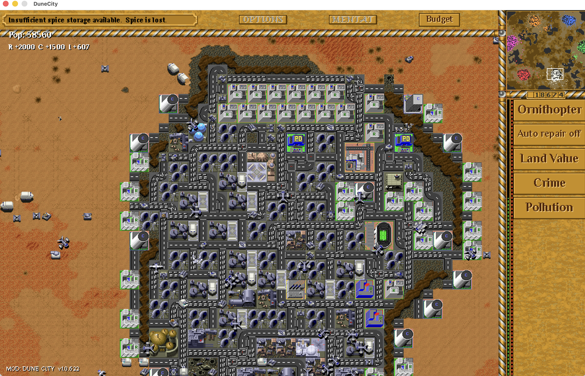
A growing colony of homes, industry and busy roads
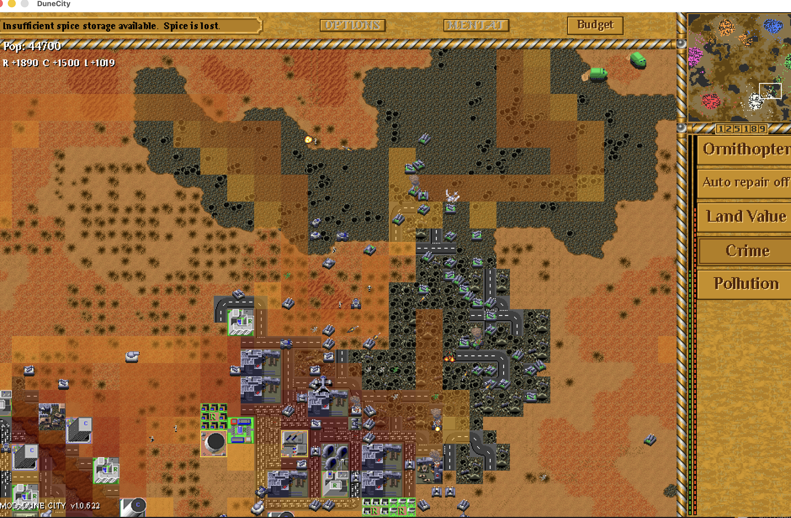
Tanks and ornithopters battle at the city frontier
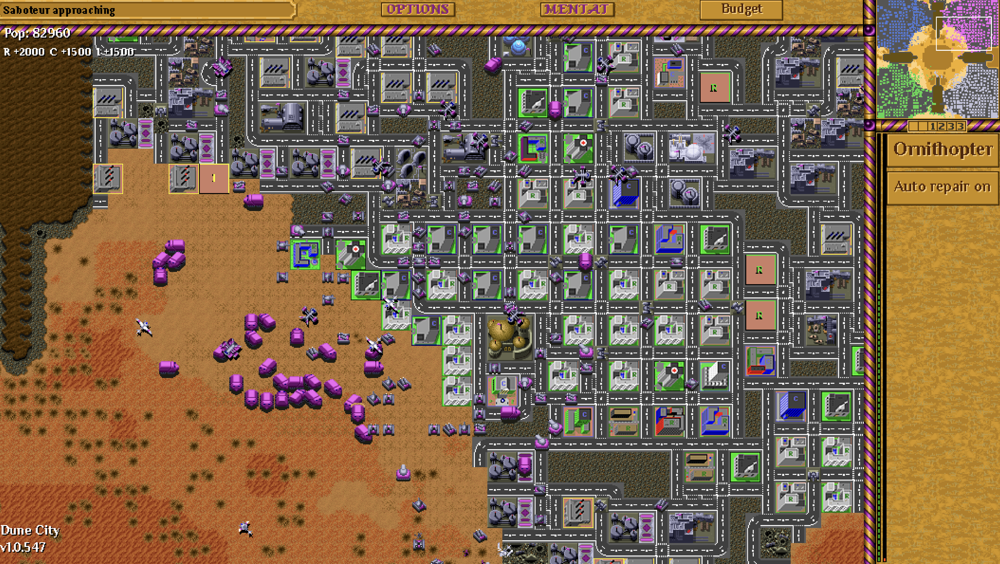
Spice harvesters supply a city on the edge of the desert
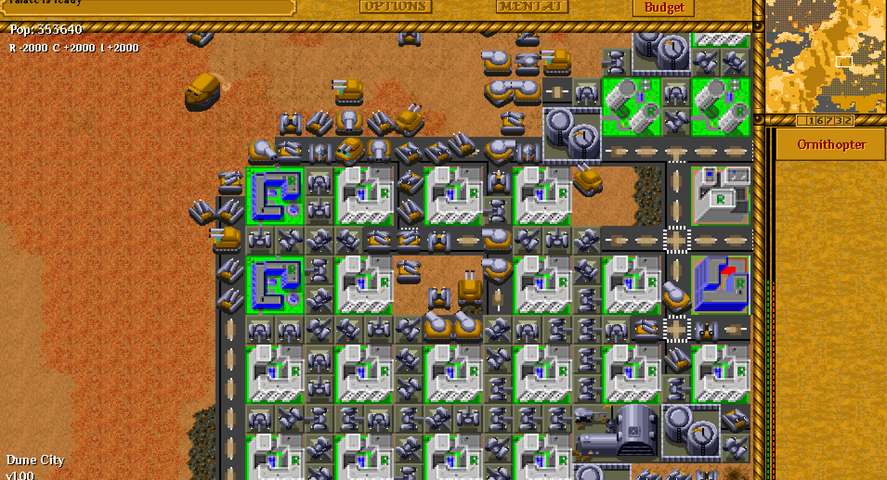
Settlement planning starts to bite into the desert
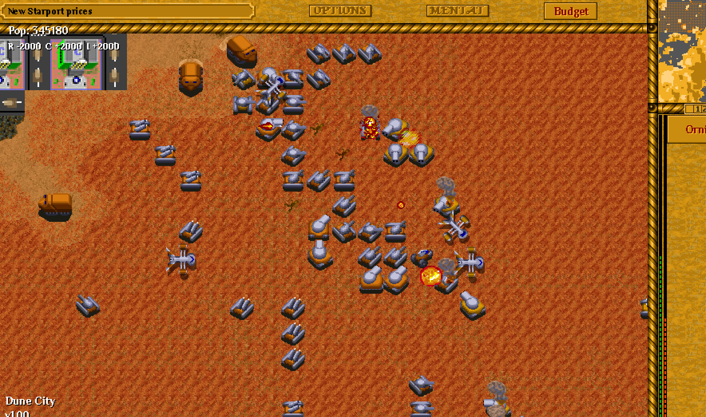
Build controls and infrastructure systems coming online
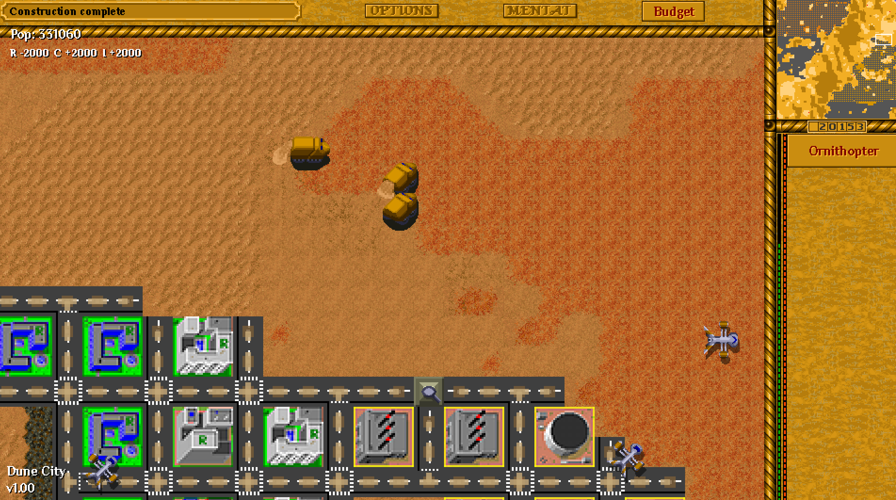
Zoning turns empty sand into a working colony plan
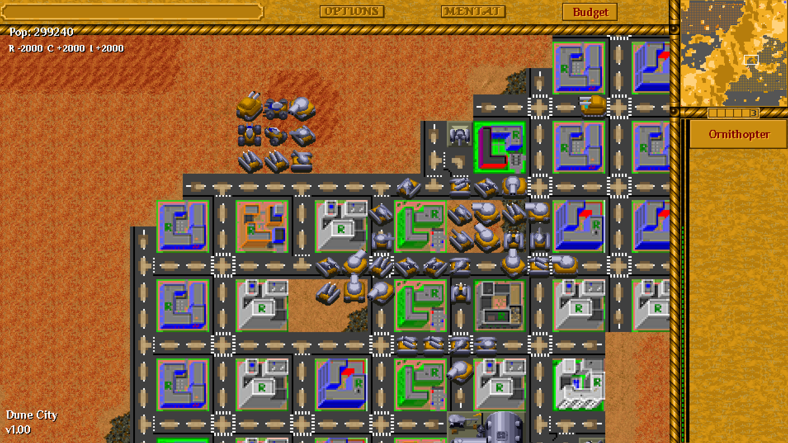
Power and districts make expansion a real decision
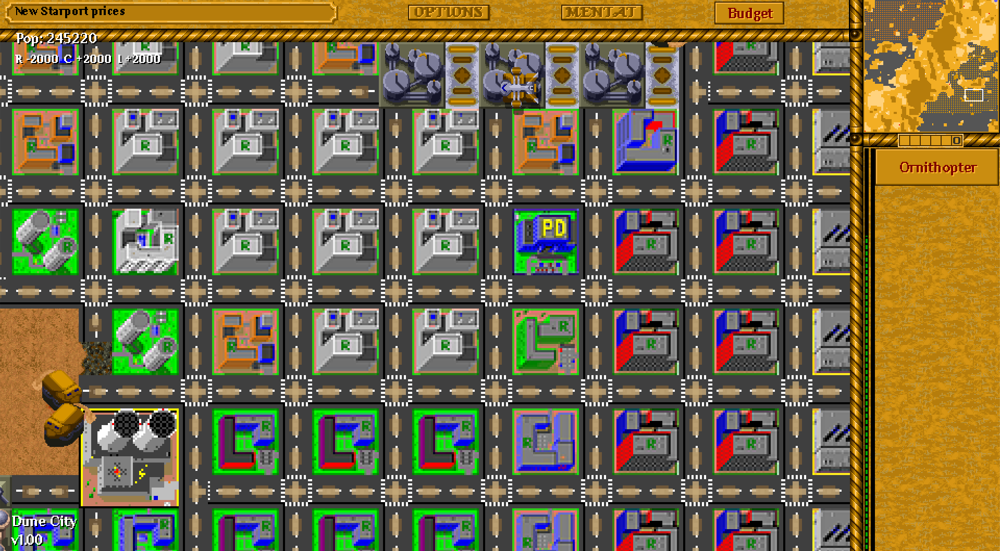
The colony pushes outward into hostile terrain
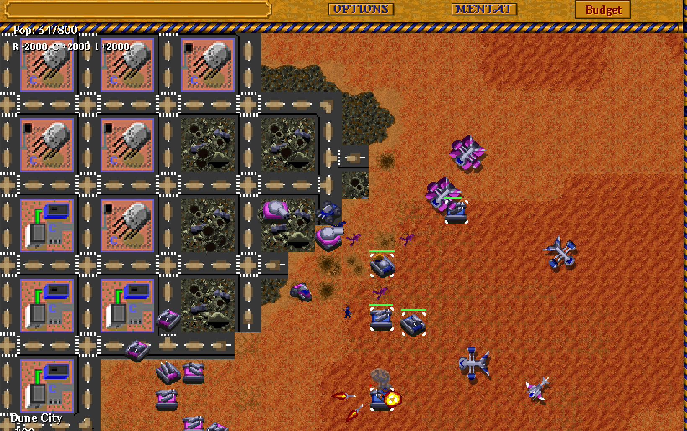
New build tools make the mode feel like its own game
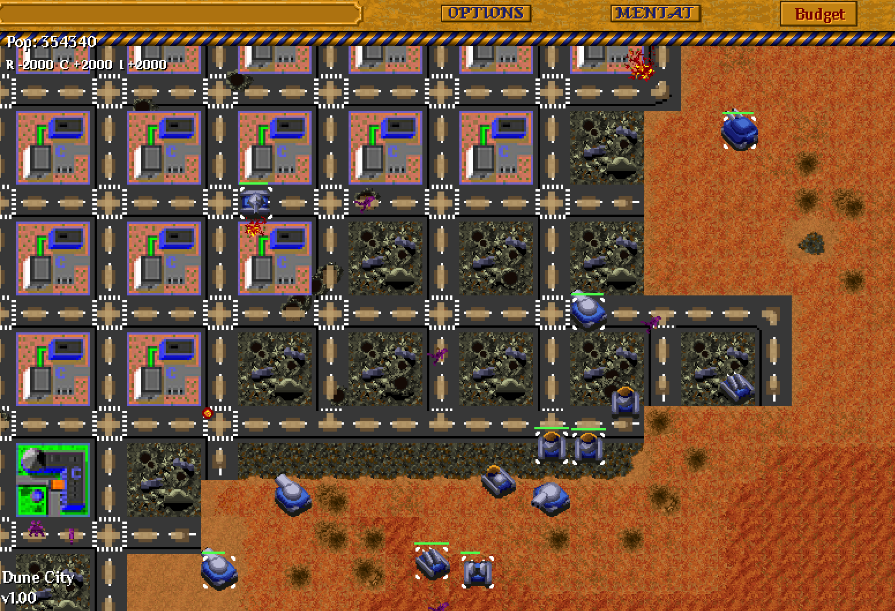
More systems, more pressure, more city to keep alive
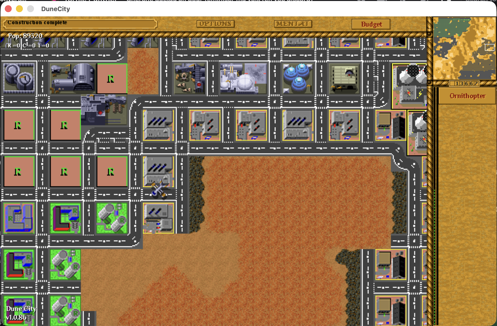
Early colony planning — residential zones, roads, and desert expansion
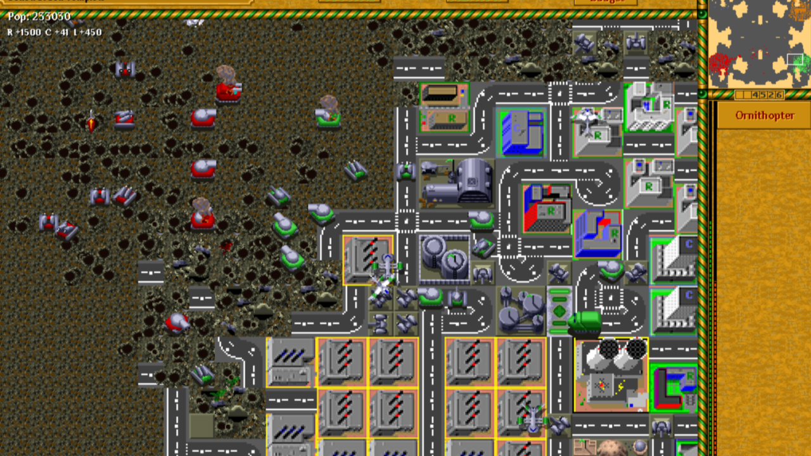
Frontier warfare — turrets, tanks, and ornithopters defend the growing city
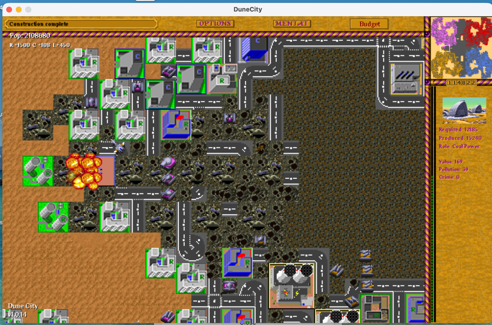
Late-game megacity — 2M+ population, power grids, and combat events
New in 1.0.851: Classic Desert brings back the sandy interface with textured buttons, crisp retro pixel lettering and engraved dark-orange labels. It is the default for new profiles; existing saved choices are preserved. Choose Classic Desert, Lapis Enamel or Modern in Settings. Native 1:1 display, gameplay zoom and Dune2R world scaling remain independent of the interface skin. This release also includes 1.0.850's large-map performance improvements, stronger AI and campaign fixes. Multiplayer players should use the same version. What's new in every release · Play campaign co-op with your friends online!
Windows, macOS and Linux 1.0.851 are available from GitHub Releases. Android is 0.2.30, using the same 1.0.851 engine.
macOS 14.0+ (Apple Silicon)
Download DMGDeveloper ID signed and Apple notarized. Open the DMG and drag DuneCity into Applications.
Android 6.0+ (ARM64)
Download APKOptional Dune2R assets download in-game, keeping the initial APK smaller.
Dune City layers a Micropolis-style city simulation on top of Dune II. Build a Construction Yard, lay out roads, drop R/C/I zone tiles, and keep the lights on. The simulation does the rest.
On first launch Dune City offers a one-click Enable now prompt for the bundled city-sim mod. If you skip it, you can flip it on later under Options → Mods → Dune City.
Pick Single Player → Custom Game and load the bundled map "2P - 192x192 - SimCity" (or any larger map with big rock areas). The city tools only work on rock.
The build menu also exposes three new tiles when city-sim mode is on:
Drop zones as 2×2 tiles. Each starts empty and develops over time based on land value, power, supply, and crime.
Population pays taxes annually. Police stations cost upkeep. Open the city budget window (HUD button) to set tax rate and police funding. Underfunded police means rising crime, which crashes land value and stalls growth.
Combat still applies. Dune City is layered on top of Dune Legacy, so units, vehicles, ornithopters, sandworms and combat all still work. You can play a pure city-builder skirmish on a big rock map, or a hybrid where you defend the colony while it grows.
The current Mac installer is signed with Developer ID and notarized by Apple.
The game checks for updates automatically when the main menu opens. When an update is available, click Update available and choose Install update or Later. Saves, settings and user mods stay in their separate user folder.
Install the latest desktop edition once to enable future in-game updates. Releases before 1.0.732 still need this manual installation.
Dune City 1.0.851 is current for Windows, macOS and Linux; Android is 0.2.30 (engine 1.0.851). Active development continues — bug reports, balance feedback, and city screenshots are all very welcome.